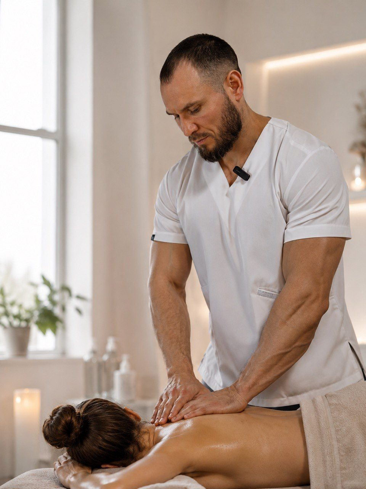
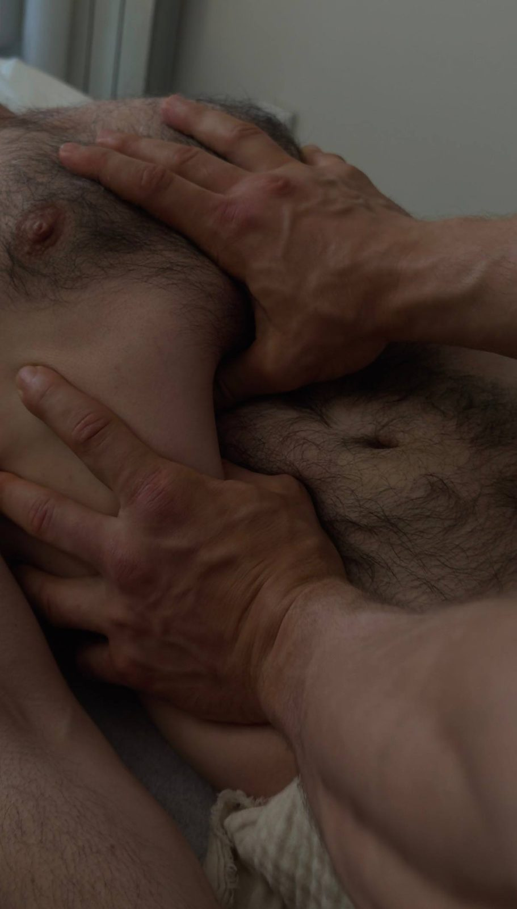
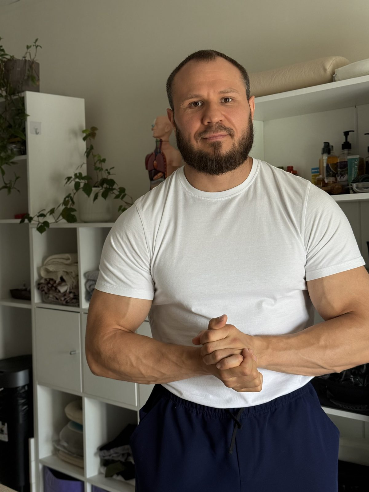
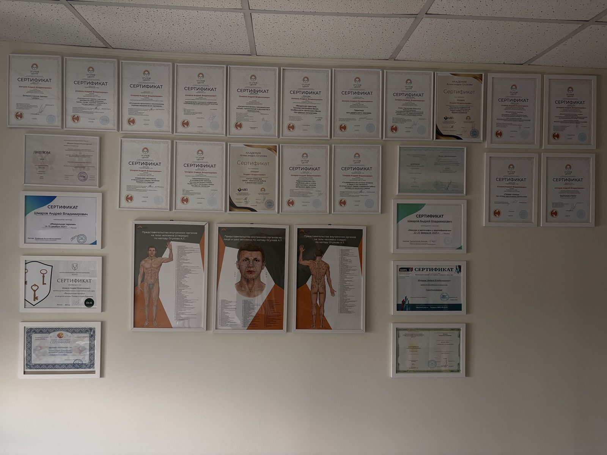
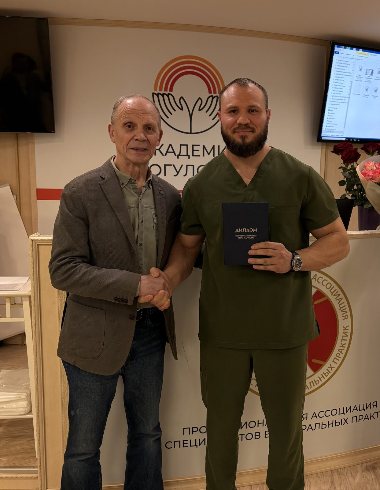
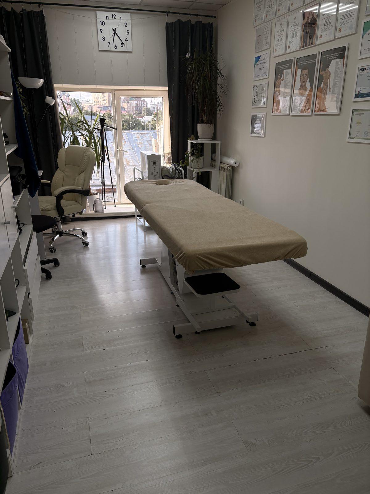

Шаг 1
Рацион питания
10 правил питания при проблемах с ЖКТ: как разгрузить пищеварение и вернуть лёгкость без диет.
1 490 ₽Подробнее
Помогаю обрести лёгкость, энергию и здоровье без таблеток и операций — через глубокое понимание тела, причин недомоганий и природных механизмов восстановления.

5+ лет практики
288 ак. часов мед. массажа
30+ сертификатов и дипломов
Огулов выпускник Академии
Методички и курс
Пять авторских методичек, которые складываются в одну систему. Начните с любой темы — или пройдите весь путь целиком в сопровождении.
10 правил питания при проблемах с ЖКТ: как разгрузить пищеварение и вернуть лёгкость без диет.

Техника работы с животом своими руками: диафрагма, отток жёлчи, перистальтика, спокойные нервы.

30-дневная система против отёков и вздутия: нутрицевтики, ферменты, сорбенты и упражнения.

Домашнее очищение печени и жёлчного пузыря: три вида тюбажей и работа с блуждающим нервом.

Безмедикаментозная программа на 2,5–3 месяца: биоплёнки, поэтапная санация, восстановление слизистых.

Все пять методичек в одной выстроенной системе + личное сопровождение в закрытом чате на все три месяца. Для тех, кто хочет не «по-быстрому почиститься», а восстановить здоровье и навсегда забрать знания с собой.

Обо мне
Моя миссия — помочь вам обрести лёгкость, энергию и здоровье без таблеток и хирургических вмешательств. Я работаю с причиной, а не со следствием: боли, воспаления и усталость — лишь сигналы, и мы находим их первопричину.
Дипломированный массажист (288 академических часов медицинского массажа), выпускник Академии А. Т. Огулова по специальности «Технологии комплексной коррекции функционального состояния организма». Более 5 лет успешной практики. Сторонник здорового образа жизни и славянской культуры мировосприятия, счастливо женат, воспитываю дочь. Наречён вторым именем — Булат.


Направления работы
Восстановительный массаж, висцеральная терапия, мануальная терапия, гуаша, физиотерапия — снимаю мышечные блоки, возвращаю подвижность и улучшаю кровообращение.
Гирудотерапия, хиджама, очищение лимфатической системы, чистка печени и жёлчного пузыря, противопаразитарные программы.
Лечебная физкультура, дыхательная гимнастика, персональные рекомендации по питанию — учу правильно дышать, двигаться и восстанавливаться.
Древние практики парения для глубокого расслабления и выведения токсинов.
Комплексный подход, объединяющий все методы для мягкого, но устойчивого результата.
Личный приём
Москва, 1 минута от м. Таганская — или в домашней обстановке в г. Дзержинский.
Отзывы
Отзывы клиентов с Авито — привожу дословно.
«Могу ответственно заявить, что в свои 52 года наконец узнала, что такое качественный настоящий массаж — а перепробовала я немало специалистов, поверьте. Работа Андрея по восстановлению здоровья теперь для меня как калибратор. Всем, кто любит хороший массаж, рекомендую не тратить время на поиски других рук».
«Очень доволен результатом! После сеанса висцерального массажа чувствую себя намного легче и спокойнее. Помогло снять напряжение в области живота, улучшилось пищеварение. Мастер профессиональный и внимательный к деталям. Обязательно вернусь!»
«Андрей — в первую очередь профессионал своего дела с крайне широким кругозором и крайне сильными руками. Без особого знания пришёл с запросом на классический массаж — тогда как Андрей грамотно подобрал актуальные именно для меня триггерные точки, в том числе с учётом психосоматики. 1,5 часа пролетели незаметно».
«Хочу поделиться опытом посещения русской бани с Андреем. Это было просто невероятно! Каждый момент был полон удовольствия — я почувствовал себя новым человеком, полным энергии. Настоящее блаженство: не только расслабление, но и ощущение полной гармонии. Вышел с улыбкой на лице и чувством восторга».
Контакты
м. Таганская, ул. Большие Каменщики, д. 1, эт. 6, каб. 11
офисный центр рядом с магазином «Азбука вкуса», 1 минута пешком от метро
г. Дзержинский, ул. Лесная, д. 11
Онлайн-консультации — для тех, кто не может приехать лично
